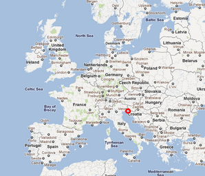

Get your data into Drupal with
Feeds
Janez Urevc (@slashrsm)
(janez@|http://)janezurevc.name
DrupalCon Portland, Site building track
May 21st 2013
About @slashrsm

Feeds
- very powerfull module (framework) for importing 3rd party data into Drupal
- plugabble, flexible
- uses abstract workflow that can cover wide set of use cases
- can import XML, HTML, RSS, CSV, OPML, ... (you name it!)
- data can be saved as nodes, terms, users, DrupalCommerce
products, ...
Demo 1: Import users from CSV
Feeds: concepts
- 4 basic workflow steps:
- fetcher
- parser
- processor
- mapper
Fetcher
- "downloads" data to your site
- http download, file upload, location on server, SQL
- Even some more wierd ones: IMAP, POP3, ....
- Custom: VideoOnDemand database
Parser
- transforms raw data into usable form
- RSS, Atom, CSV, OPML
- xPath (//h1, //div[@id='article-content'], ...)
- QueryPath (PHP XML/HTML querying library)
- YouTube, Vimeo, Excel, ...
Processor
- knows how to save data
- nodes, terms, users
- Drupal commerce products
- ...
Mapper
- provides link between parsed data and Drupal object
- fields!
- Entity reference, Link, ...
- very useful if you implement your custom field
Demo 3: Weather observations XML import
Helper modules
- Feeds tamper (dgo.to/feeds_tamper)
- alter data (s/r, combine fields, covert, ..)
- plugins
- Feeds crawler (dgo.to/feeds_crawler)
- fetcher
- paging through more pages (scraper)
- more: dgo.to/856644
Example: "Google Reader replacement"
- Entirely configured with Feeds & Views
- Proof of concept
- dgo.to/1969414
Resources
- dgo.to/feeds - project page
- dgo.to/622696 - docs
- git.io/2fsxuw - demos